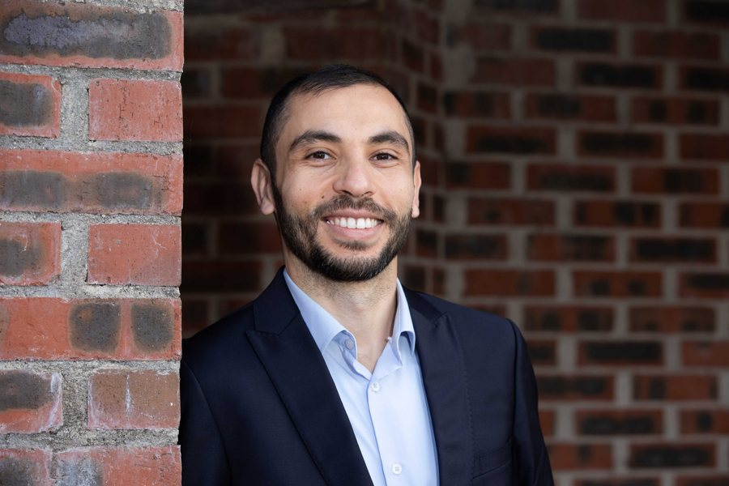

About

Dr Haithem Afli is a Lecturer in Artificial Intelligence at Munster Technological University and a researcher in multilingual, culturally aware and human-centred AI. He serves as Institutional Co-Lead for Rinn Artificial Intelligence at MTU, Deputy Theme Lead for Inclusive Language Model & Translation Methods, and Principal Investigator in the centre.
He is also a Principal Investigator and MTU Lead within the Research Ireland ADAPT Centre and founder of the Human-Centred AI Research Group. His research focuses on inclusive language models, machine translation, multilingual and Arabic NLP, culturally grounded reasoning, reliable evaluation of large language models, trustworthy AI, healthcare AI and computational biology.
His work connects foundational AI research with education, public engagement, interdisciplinary collaboration and practical applications across language, health, science and industry. Governance and service roles are detailed on the Leadership & Service page.

Current roles and affiliations
Munster Technological University
Lecturer in Artificial Intelligence and Principal Investigator
Teaching and research in AI, NLP and machine learning.
Rinn Artificial Intelligence
Institutional Co-Lead at MTU; Deputy Theme Lead, Inclusive Language Model & Translation Methods; Principal Investigator
One coherent institutional appointment in the national Research Ireland centre.
ADAPT Centre
Principal Investigator and MTU Lead
Research Ireland centre for AI-driven digital content technology.
Human-Centred AI Research Group
Founder and Lead
MTU research group on multilingual, culturally aware and trustworthy AI.
Computer Science Postgraduate Research Board, MTU
Chair
Postgraduate research governance.
European Commission Research Executive Agency
External Expert
Evaluator for Horizon Europe research and innovation actions.
Professional memberships: ACM · ACL.
Research focus
Inclusive and multilingual language models · machine translation and translation methods · evaluation science and the reliability of LLM-as-a-judge · human-centred and trustworthy AI · AI for healthcare, biology and scientific discovery. See Research and Rinn AI.
Education
- PhD in Computer Science (NLP), Le Mans Université, France, 2014 — Statistical Machine Translation in a Multimodal Context.
- MA in Computational Linguistics, Université Grenoble Alpes, France, 2010 — Arabic Speech Translation.
- BSc (Hons) in Informatics, Université de Monastir, Tunisia, 2009.